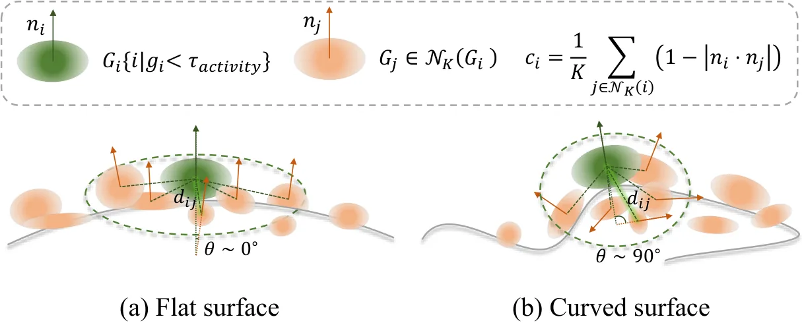
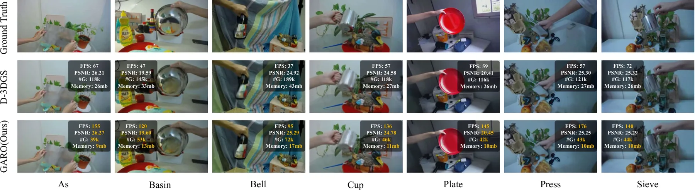
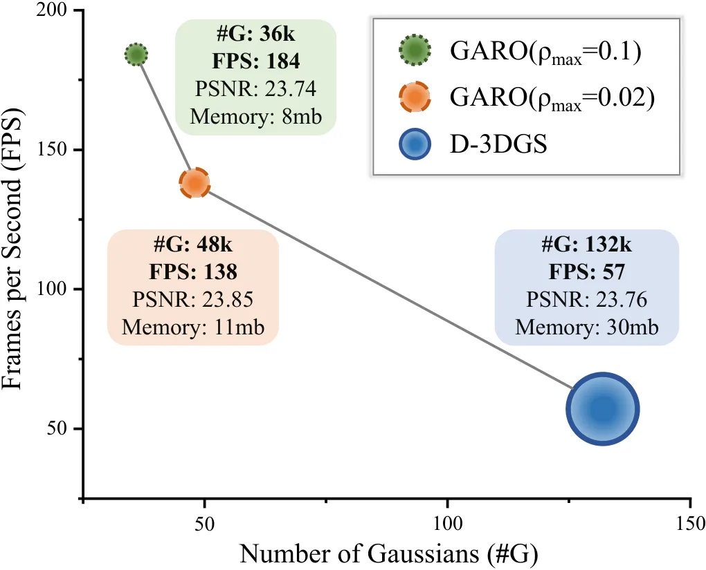
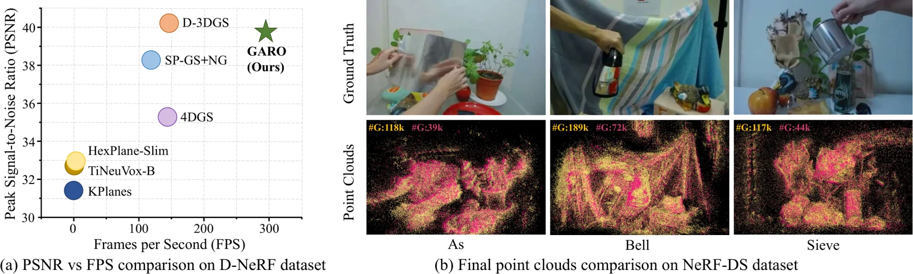

GARO：面向实时高保真动态 Gaussian Splatting 的几何感知冗余优化
GARO: Geometry-Aware Redundancy Optimization for Real-Time and High-Fidelity Dynamic Gaussian Splatting
先筛除低优化活跃度候选，再用低曲率几何分析过滤平坦区域冗余点；论文报告保持 PSNR 稳定并获得 2× 渲染加速。
作者、单位与技术谱系 · Research context
作者与单位
研究脉络
- 动态 Gaussian Splatting方法基座关系：GARO 继承动态 Gaussian 的时变表示，并把问题聚焦到 density-control 的冗余点。[arXiv 官方 HTML v1]
- 静态 3DGS 剪枝与密度控制方法上游关系：论文 related work 将已有 pruning、densification 和 spatial optimization 作为效率来源，本文增加几何复杂度信号。[arXiv 官方 HTML v1]
合作网络
- GAROGARO 作者单位 → 多所高校/研究机构关系：共同署名/作者单位[arXiv 官方 HTML v1]
- GAROD-NeRF / NeRF-DS → GARO关系：公开实验依赖[arXiv 官方 HTML v1]
作者和单位是原文事实；技术脉络是基于公开原文/项目关系的解读；未据此推断导师或师生关系。
方法本质拆解 · What actually changed
是不是微调？
GARO 被放置在 dynamic Gaussian reconstruction 的 adaptive density control 阶段，核心是运行时点的筛选和剪枝。它不是从头训练一个新的时空生成模型。
有没有额外约束？
额外判据是 optimization activity 与 geometric complexity，尤其使用低曲率区域识别平坦冗余。判据直接作用于 Gaussian 保留/删除，而不是作用于相机位姿。
推理/后端到底做了什么？
在线/优化过程中，系统先筛候选，再依照联合冗余测量执行 pruning。它改变的是场景表示大小、渲染吞吐和内存负担。
方法本质是什么？
方法本质是只在“对优化不活跃且几何简单”的区域删点，把点预算集中到高曲率细节。由此把几何结构信息转化为实时渲染的资源分配规则。
输入动态 Gaussian + 活跃度与曲率判据 + 联合剪枝 → 更小的表示和更高的渲染吞吐，同时控制质量损失。

动机与问题Motivation
动机与问题
动态 Gaussian 方法往往用大量点换取细节，导致内存和渲染开销上升。只按梯度或密度剪枝可能删除仍承载曲率细节的点，因此需要同时考虑优化活动与几何复杂度。
方法Method
方法总览
GARO 在 adaptive density control 中先用 optimization activity assessment 选出低梯度候选，再用 low-curvature analysis 估计几何复杂度并剪枝。联合指标将冗余点集中到低活动、低曲率区域。
关键技术细节
优化活跃度用于定位对当前优化贡献小的候选，而低曲率判据用于避免把高曲率细节误删。pruning ratio 仍是外部效率旋钮，所以方法是动态管线中的几何感知 density-control 模块，不是新的场景生成器。

实验Experiments
实验设置
实验章节覆盖 D-NeRF 和 NeRF-DS 数据集，包含定量质量/效率比较、定性可视化和 pruning-ratio 消融。指标至少包括 PSNR、FPS/渲染速度、Gaussian 数量或内存开销，并与动态 Gaussian 基线比较。
实验数字与比较
摘要给出渲染速度提升 2×，且 PSNR 保持稳定；原文图示还以 Gaussian 数量与 FPS 的关系比较 GARO 和基线。不同 pruning ratio、数据集和表格中的精确 PSNR/FPS 数值需按官方 HTML 表格逐项核验。
消融/失败边界
作者单独消融 optimization activity assessment 与 geometric complexity assessment；去掉任一项会退化为单信号剪枝，无法同时利用优化状态和局部曲率，精确质量/速度变化需核表。过强 pruning ratio、曲率估计不稳或快速非刚体运动都可能让低曲率假设失效。
局限与迁移Limitations & Transfer
局限与待核验
论文明确把方法放在传统 dynamic reconstruction pipeline 的 adaptive density control 中，因此收益依赖上游动态 Gaussian 表达和 pruning ratio。跨不同运动速度、遮挡密度、长序列内存峰值及真实机器人传感器流的泛化仍待核验。
与你研究路线的关系
可迁移模块是“几何复杂度—优化活跃度—资源预算”的联合门控，可作为 4D 地图的可观测性/计算预算接口。下一步应固定质量阈值，扫 pruning ratio，并同时测 PSNR、时延、显存、轨迹/视点变化下的稳定性。
{kind=link}

{kind=link}

{kind=link}
